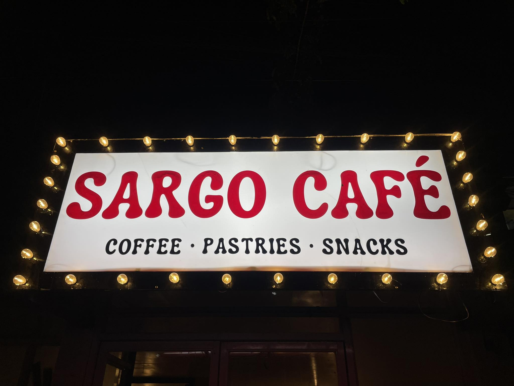
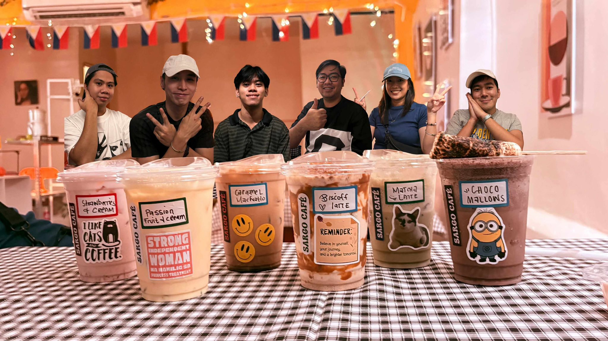
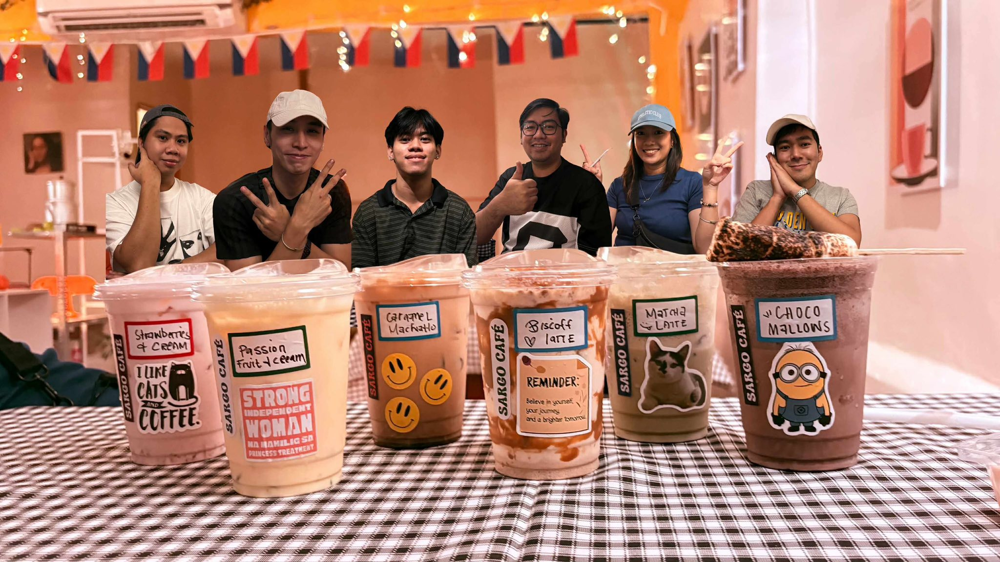
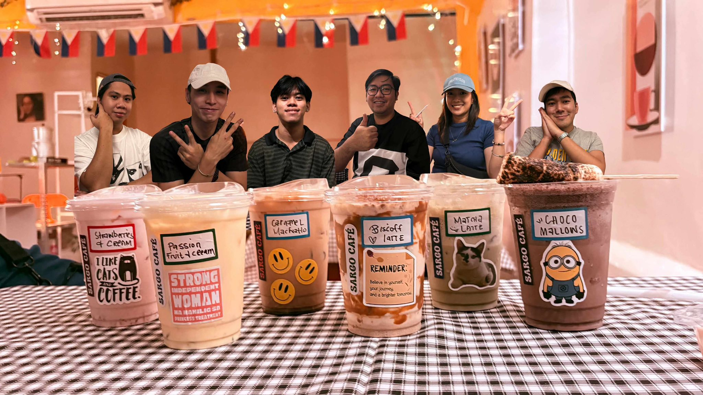
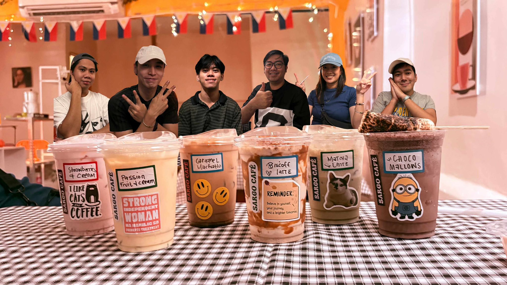

Our Space & Coffee

 


Chill, study, or work anytime in a warm and aesthetic café.
Sargo Café is a thoughtfully designed coffee shop where comfort meets quality. Whether you’re studying, working, or unwinding, our cozy ambiance, handcrafted coffee, pastries, and snacks create the perfect space—any time of the day.

“I recently stopped by Sargo Café and was pleasantly surprised by the inviting ambience. The space is warm and thoughtfully designed, with soft lighting, comfy seating, and a gentle playlist that makes it easy to relax or focus. The staff were friendly and attentive, greeting me with a smile as I stepped in. As for my order, I went with strawberries and cream. The fruit was fresh and bright, and the cream added a light, indulgent contrast without being too heavy. It felt like a treat that still suited a relaxed night visit.”
— Driggs Corales“So cozy and affordable. The staff are accommodating and kind. Our new favorite café!”
— Maria Eloisa“It's so cozy here and mababait yung nag s-serve samin. The food and drinks are also delicious, and affordable, and so I definitely recommend this place🤞.”
— Reese Feir“Legit espresso taste! Cozy atmosphere and great for working.”
— Ced Chuang
📍 Blk 31 Lot 74 Lapu-Lapu Ave, NBBS Dagat-Dagatan,
Navotas, Philippines 1485
⏰ Open 24 Hours
Have questions or feedback? Send us a message and we’ll get back to you as soon as possible.
📍 Navotas, Philippines
⏰ Open 24 Hours
📧 sargocafe@email.com